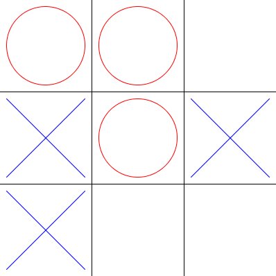
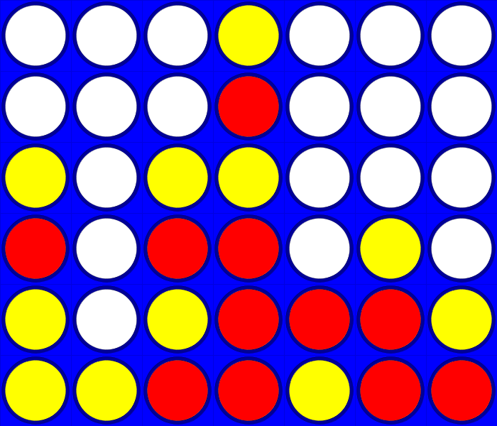
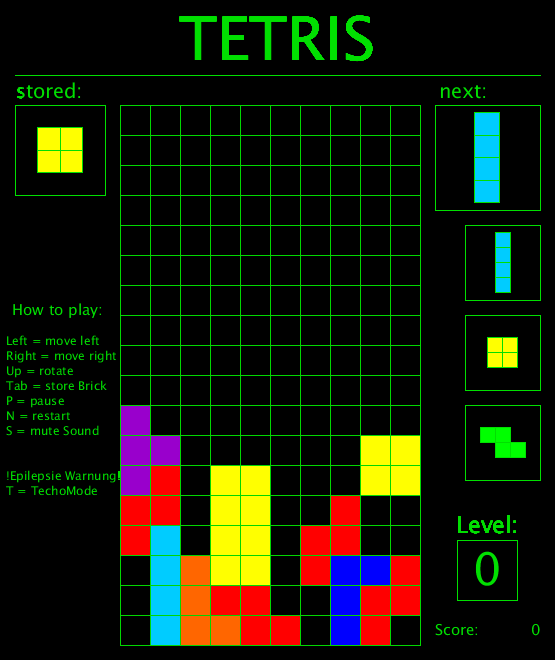

Im Rahmen der Projektwoche im Modul Objektorienterte Programmierung unter Prof.Klaus Quibeldey Cirkel haben wir vom XX.XX.XXXX bis zum XX.XX.XXXX einige Interessante Programme erarbeitet, welche ich euch gerne vorstellen möchte. Die Woche lief ganz unter dem Motto Spiele und so haben wir an Tetris, Shufflepuck und co. unsere Programmierfähigkeiten als kleine Teams von bis zu fünf Personen auf die Probe gestellt. Das Programmieren mit Processing war ein voller Erfolg und so können sich die Ergebnisse sehen lassen. Unter einer kleinen Beschreibung ist jeweils ein Download Link bereit gestellt, damit ihr euch auch selbst überzeugen könnt.
Teil 1
Eingeleitet wurde die Woche mit dem kleinem Spiel TicTacToe. Nach
einer kurzen Einführung und dem Erstellen der UML Diagramme haben wir uns gleich
an die Arbeit gemacht. Für einen Computergegner hat die Zeit
leider nicht mehr gereicht, aber man kann sich mit einem anderen
Mitspieler messen. |
 |
|  | Teil 2
Beim zweiten Teil wurde es schon etwas komplizierter. Nach dem
einfachen TikTacToe war nun das bekannte Gesellschaftsspiel
Viergewinnt an der Reihe. Nachdem wir den Rahmen schnell
aufgestellt hatten, mussten wir uns der größten Hürde dieses
Projektes stellen: Der KI. Auch wenn der Computer bis zuletzt
einige kleine Schwächen gezeigt hat, hat er sich im Verlauf
mehrerer Versionen zu einem ernstzunehmenden Gegner entwickelt. |
Teil 3
Im letzten Teil dann, wurden wir vor die Wahl gestellt, uns eines
von zwei möglichen Spielen anzunehmen. Aufgrund seines höheren
Bekanntheitsgrades und programmiertechnischen Anspruches,
entschieden wir uns gegen Shufflepuck und für Tetris. Da dieses
Projekt im ganzen um einiges umfangreicher war als die vorherigen
wurden uns hier für die Bearbeitung drei Tage gegeben. Dieses
Zeitfenster haben wir auch vollkommen ausgenutzt, um neben
mehreren Fehlern, die zu beheben waren, Musik sowie einen extra
Schwierigkeitsgrad für Spieler zu erstellen, die die besondere
Herausforderung suchen. |
 |